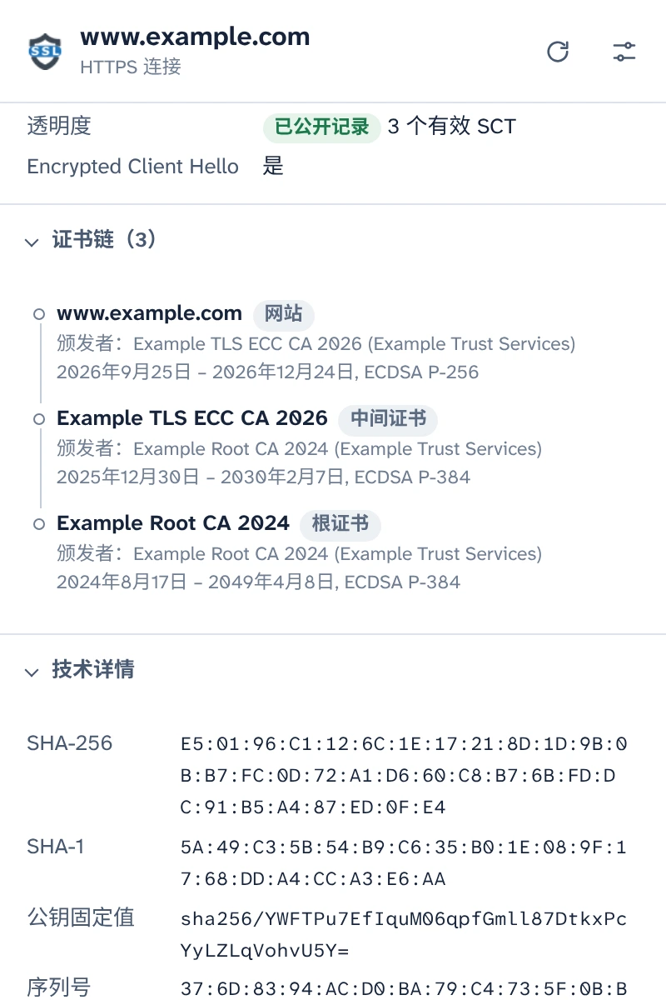
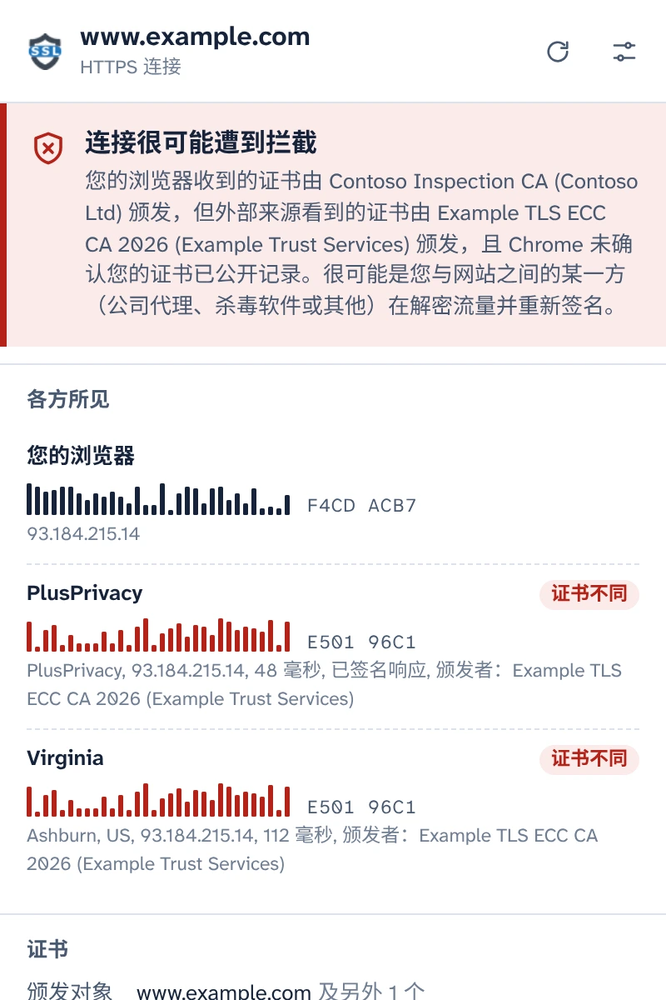
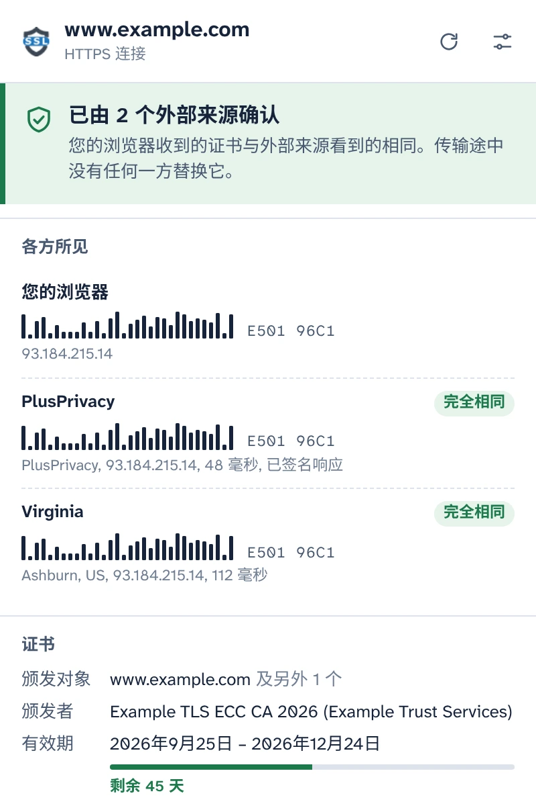
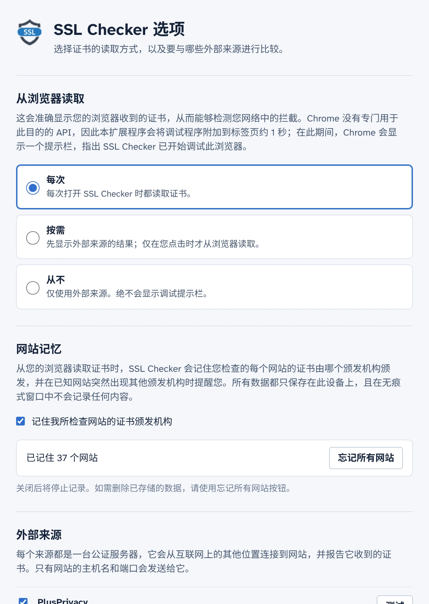

查看您的浏览器实际收到的证书
SSL Checker 直接从 Chrome 读取您标签页中网站的证书，并将其与独立公证服务器从互联网其他位置看到的证书进行比较。如果两者不同，就说明您与网站之间有某一方正在替换证书。
免费开源。无需账号，无统计分析。
已由 2 个外部来源确认连接很可能遭到拦截
您的浏览器收到的证书与外部来源看到的相同。传输途中没有任何一方替换它。您的浏览器收到的证书由 Contoso Inspection CA 颁发，但外部来源看到的证书由 Example TLS ECC CA 2026 颁发。
- 您的浏览器 E501 96C1F4CD ACB7
- PlusPrivacy 完全相同证书不同 E501 96C1
- Virginia 完全相同证书不同 E501 96C1
连接的每一个细节
这是 Chrome 为此标签页收到的内容，直接从浏览器本身读取，而不是从服务器重新获取。
- 涵盖的名称、颁发者、有效期和剩余天数、验证级别（DV、OV、EV）
- TLS 版本、密钥交换（包括后量子混合方案）、加密算法和 Encrypted Client Hello
- Certificate Transparency 状态和签名证书时间戳
- 完整的证书链、指纹和每一项证书扩展。可复制 PEM 或下载证书链。

发现 HTTPS 拦截
公司代理、杀毒软件的 HTTPS 扫描以及公共 Wi-Fi 上的攻击者，原理都一样：它们解密您的流量，再把自己的证书交给您的浏览器。页面看起来一切正常，锁形图标也依然显示。
SSL Checker 会询问 PlusPrivacy 公证服务器以及您添加的任何公证服务器，同一网站向它们出示的是哪张证书。它们从互联网上的其他位置连接，绕开您网络中的任何中间环节，随后比较指纹：
- 各处证书相同：已确认。
- 您的证书不同且未公开记录：很可能遭到拦截。SSL Checker 会指出替换证书的颁发机构，并能识别已知的 HTTPS 检查产品。
- 各来源结果不一致：如实报告，并说明每种情况可能意味着什么。

传输途中任何人都无法伪造的响应
拦截您流量的一方也可能试图以公证服务器的名义作出响应，但这行不通：PlusPrivacy 公证服务器使用 Ed25519 对每个响应签名，SSL Checker 会验证签名、每次询问附带的随机数以及所询问的网站。伪造、重放或被重定向的响应都会被拒绝，弹出式窗口会提示响应已被某一方修改。
运行您自己的公证服务器
公证服务器是开源的：一个适用于 Docker 的小型 Node.js 服务，可防范请求泛洪和指向私有网络的请求。将它安装在任意服务器上，在选项中添加其地址和密钥，它的响应就会以同样的方式得到验证。

由您决定何时运行调试程序
Chrome 没有可供扩展程序获取已加载页面证书的 API，因此 SSL Checker 在读取证书时，会将 Chrome 的调试程序附加到标签页约 1 秒，在此期间 Chrome 会显示调试提示栏。您可以在选项中选择何时进行读取：
- 每次打开弹出式窗口时
- 按需，在弹出式窗口中点击一下即可
- 从不：只询问公证服务器
它会记住您检查过的网站
SSL Checker 会记住每个网站使用的证书颁发机构，并在您熟悉的网站突然出现其他颁发机构时提醒您，例如在新的 Wi-Fi 网络中。网站记忆只保存在您的设备上，绝不会在无痕式窗口中使用，并且可以在选项中关闭或清除。

从设计上保护隐私
- 在您于弹出式窗口中同意之前，不会读取或发送任何内容。
- 只有网站的主机名和端口会离开您的设备，它们放在发往您所用公证服务器的 HTTPS 请求正文中。
- PlusPrivacy 公证服务器不会保留所检查网站的任何记录。您可以将其关闭，或只询问您自己运行的公证服务器。
- 无统计分析、无跟踪、无需账号。网站记忆绝不会离开您的设备。
- 本网站同样没有统计分析，也不会从其他服务器加载任何内容。
POST /v1/cert
Content-Type: application/json
{
"host": "www.example.com",
"port": 443,
"nonce": "Xq3MpTb0vR9kLs2eWn5yZA"
}